Good AI links, saved as I find them. Newest first.
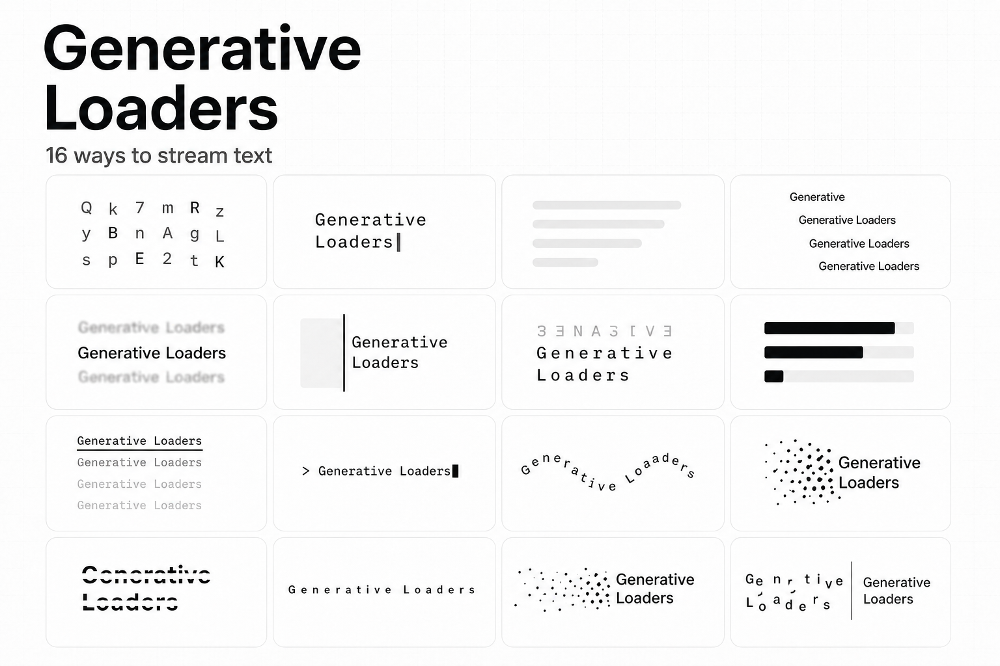
Generative Loaders
Open-source animated React loaders for generative UI states: 16 text streaming loaders, 18 inline loaders, and 12 image loaders. Free, installable via npm install generative-loaders. By Kasturi Khanke.
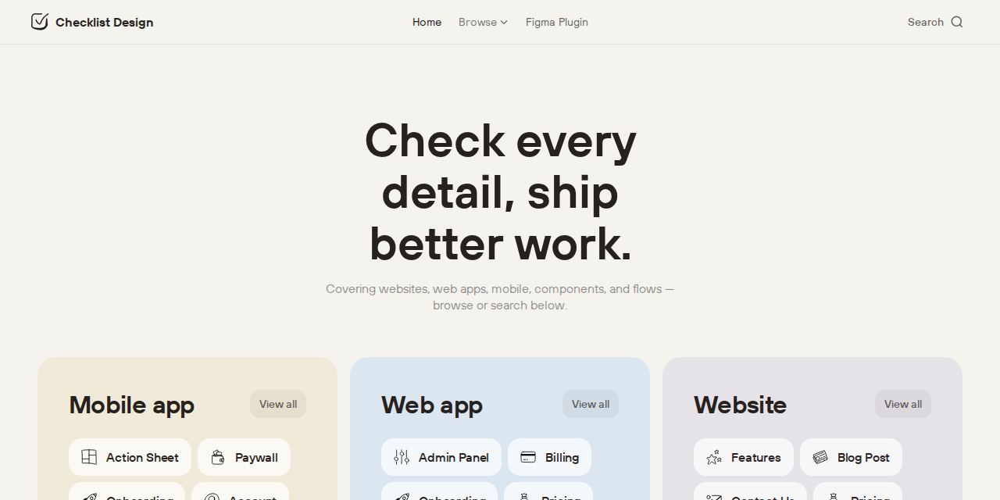
Checklist Design
Design checklists for websites, web apps, mobile, components, and flows. Each checklist walks through the details worth covering before shipping a screen or component. There is also a Figma plugin.
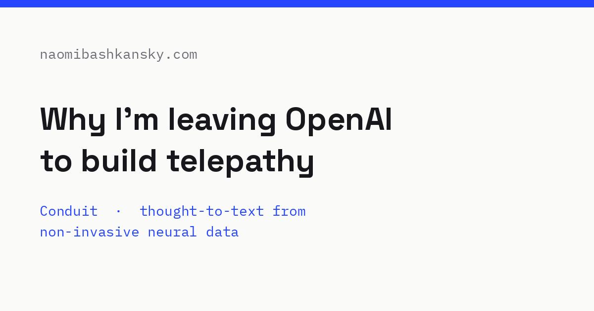
Why I'm leaving OpenAI to build telepathy
Naomi Bashkansky left OpenAI's alignment team to join Conduit as a Founding Researcher. Conduit is building thought-to-text models trained on non-invasive neural data, betting the bitter lesson applies here too: scale data collection far past anything academia has done. She sketches vignettes of 2027, 2030, and 2035, and argues imperfect decoding is fine because the LLM plus context acts like a map for a noisy GPS signal.
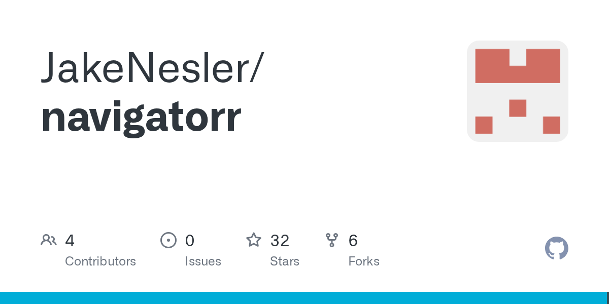
Navigatorr: an MCP server for the *arr media stack
A Go MCP server that connects Claude to self-hosted media services: Sonarr, Radarr, Lidarr, Prowlarr, Overseerr, plus Transmission and qBittorrent. Instead of hardcoding every endpoint, it fetches each service's OpenAPI spec at startup, caches and indexes it, and exposes doc search plus a generic call_api tool with field selection, filtering, a response size guard, and DELETE calls blocked by default.
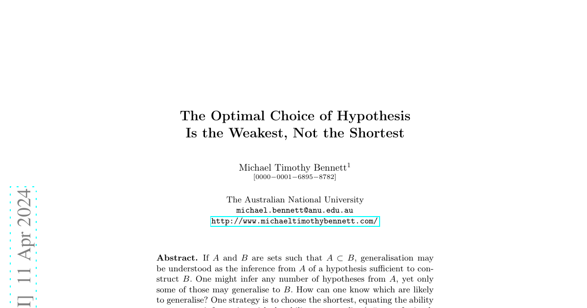
The Optimal Choice of Hypothesis Is the Weakest, Not the Shortest
A 2023 paper by Michael Timothy Bennett arguing that the hypothesis most likely to generalise is the weakest one that fits, not the shortest. Compression turns out to be neither necessary nor sufficient for generalisation. The tip that surfaced it: if you have any kind of self improvement loop, show this paper to the model and ask it to incorporate it.
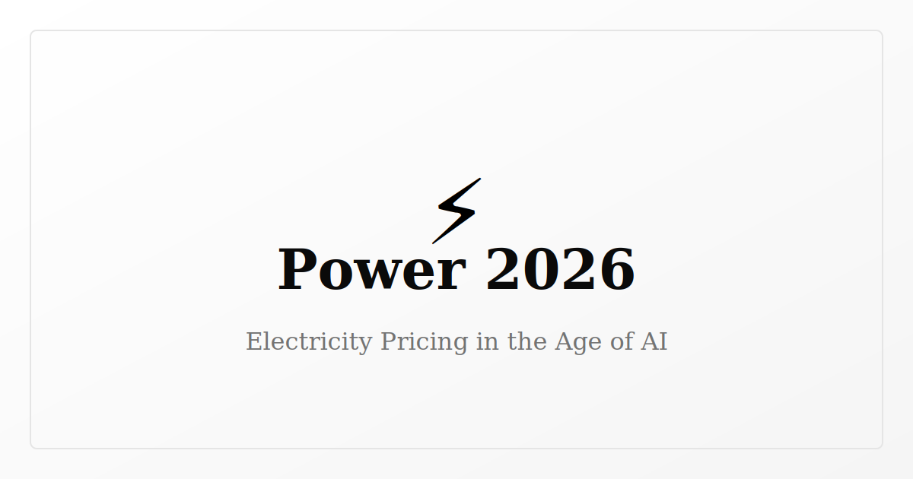
Power 2026: a primer on power pricing and data centers
Neel Somani, a former Citadel quant who covered power and gas, wrote this primer on electricity pricing in the age of AI. He argues that while the talk is all chips and memory, power is the central bottleneck for AI, and very few people understand how it is priced.
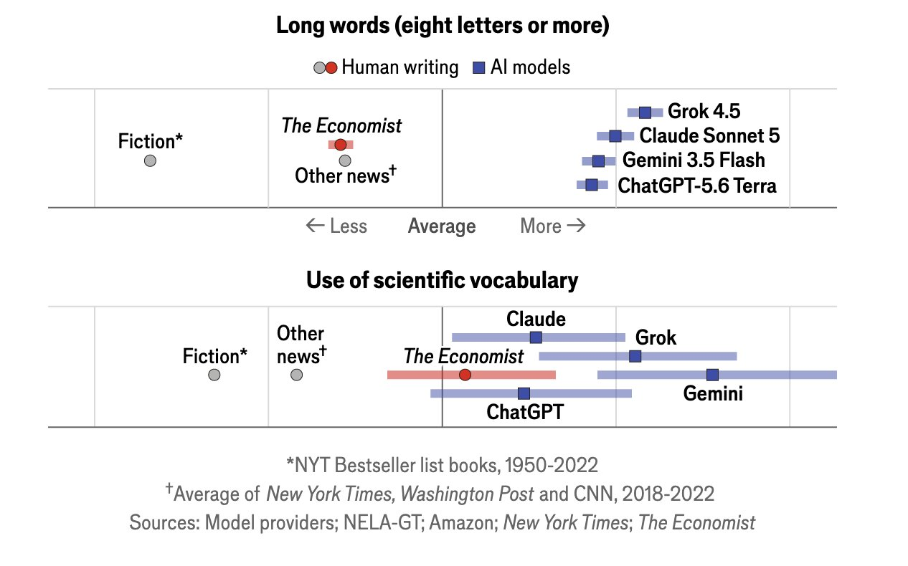
How to spot 2026-era AI writing, via the Economist
Derek Thompson summarizes an Economist examination of AI writing tells, with detection work from Pangram. The list: long sentences with less punctuation, with "and" as the most overused word. Lists of three things, which drives up "and" even more. Polysyllabic adjectives like "significant" and "increasingly". Scientific jargon like "rate-limiting" and "parameter". Nominalizations, meaning nouns made from verbs, like "expansion" from "expand". And everyone's favorite: "it's not X, it's Y".
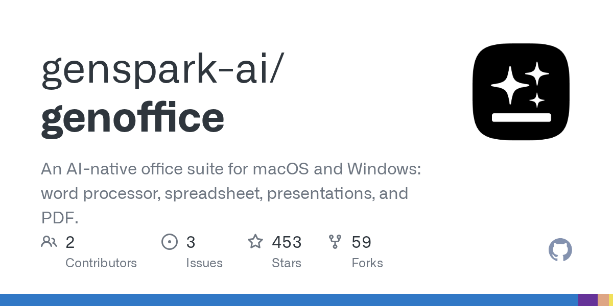
GenOffice: Genspark open sources an AI-native office suite
Genspark released GenOffice, an open source office suite for macOS and Windows: word processor, spreadsheet, presentations, and PDF as five Electron apps on one shared engine. Docs does byte-preserving docx round trips by regenerating only dirty paragraphs, Sheets runs xlsx through a Rust sidecar on the Univer core, and Slides has an in-house pptx engine. Every app embeds the same AI panel with block-level edits, version diffs, and a tool-calling agent. Announced on X as the first full-featured open source AI Office.
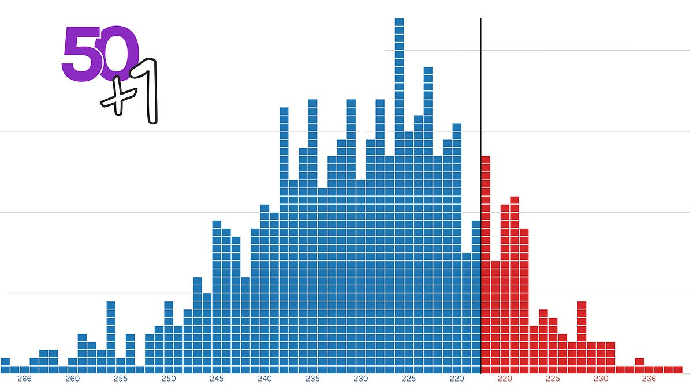
FiftyPlusOne 2026 midterm forecast: Democrats strongly favored in the House, Senate tilts Democratic
G. Elliott Morris launched FiftyPlusOne's congressional forecast. As of August 3 it gives Democrats an 85% chance of taking the House and 55% for the Senate, with a median of 230 House seats and 51 Senate seats on a +7 popular vote margin. The model combines polls, fundraising, past returns, and candidate data, and is the successor to his 2024 FiveThirtyEight model, which beat prediction markets that cycle.
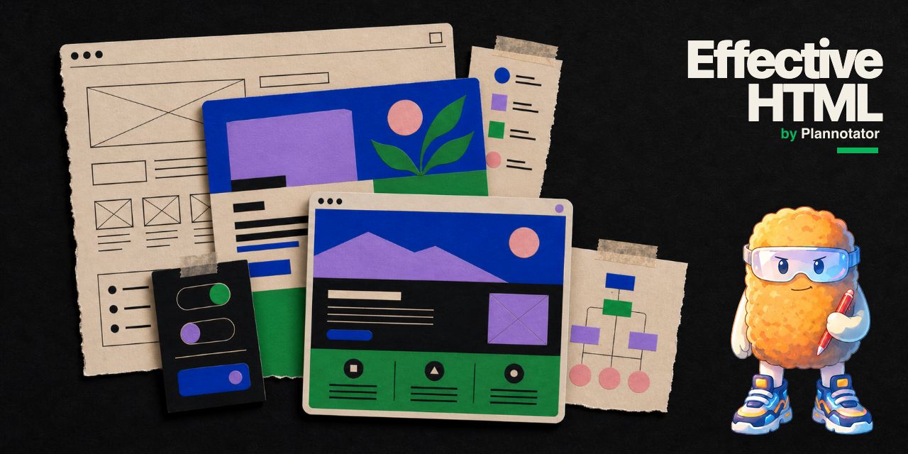
Effective HTML: a visual field guide for coding agents
A reference site from Plannotator showing what HTML artifacts you can build with agents: wireframes, prototypes, diagrams, and implementation plans. The pitch is that Markdown is often enough, but HTML wins when you need to compare designs, change states, follow a flow, or try the thing yourself. Comes with a catalog of examples and a guide.
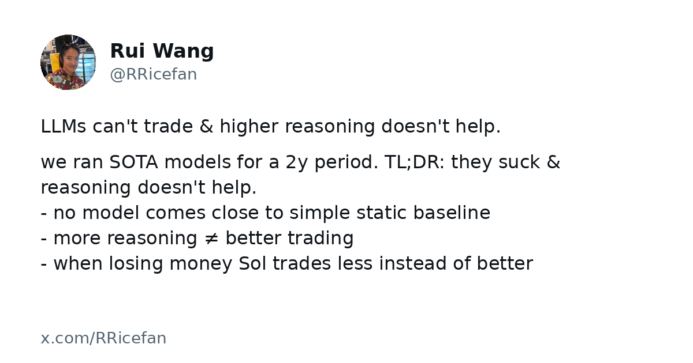
LLMs can't trade, and higher reasoning doesn't help
Rui Wang's team ran SOTA models over a 2 year trading period. No model comes close to a simple static baseline, more reasoning does not mean better trading, and when losing money the models trade less instead of better. Details in the thread.
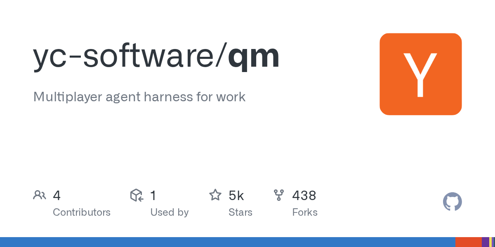
QM: YC open sources its internal multi-agent harness
YC released the multi-agent harness it uses internally, meant to be easy to customize like Hermes or OpenClaw but useful for a whole company. They run it across accounting, legal, events, and engineering, including building QM itself. MIT licensed, cloud first, with Slack and a web UI natively. Source at github.com/yc-software/qm.
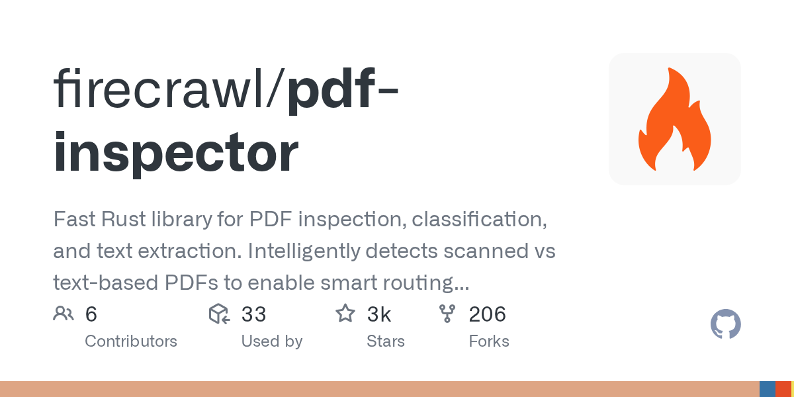
pdf-inspector: the Rust library that decides which PDFs need OCR
Firecrawl open sourced the classifier behind their PDF pipeline. It samples PDF content streams to label each page as text based or scanned in about 10 to 50ms, then extracts text and converts it to Markdown locally in under 200ms for the roughly 54% of PDFs that never needed OCR in the first place. Pure Rust with Python and Node bindings, and it returns per page OCR routing so mixed documents only send the scanned pages to the expensive path.
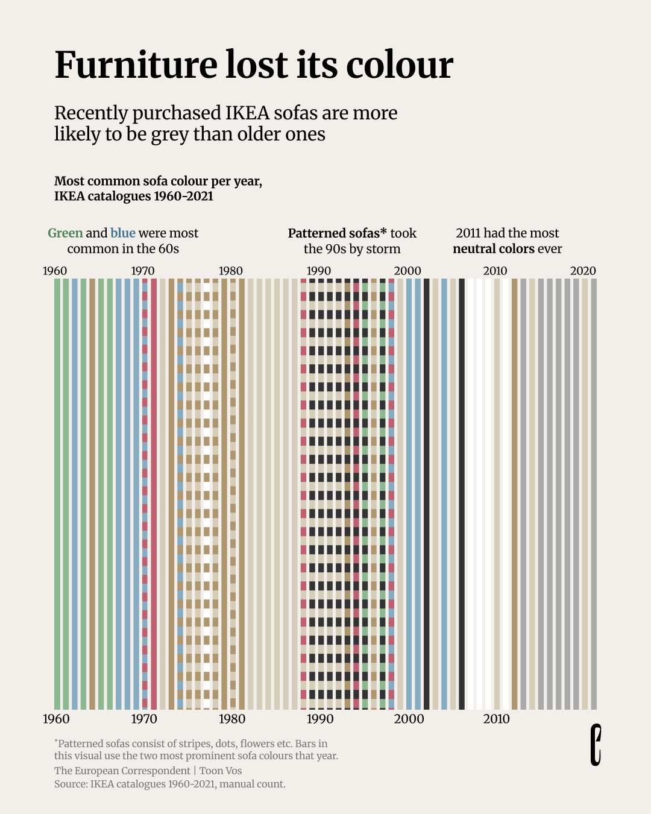
The color of IKEA sofas over time
One person hand counted the colors of 3,500 couches across every IKEA catalogue from 1960 to 2021, punching each one into a tallying machine vibecoded with Claude, then drew the chart in Illustrator. The most popular color per year tells the story: wild late 60s designs, a beige 80s, a colorful patterned 90s, and grey taking over the 2010s. Posted on r/dataisbeautiful with 11K upvotes.
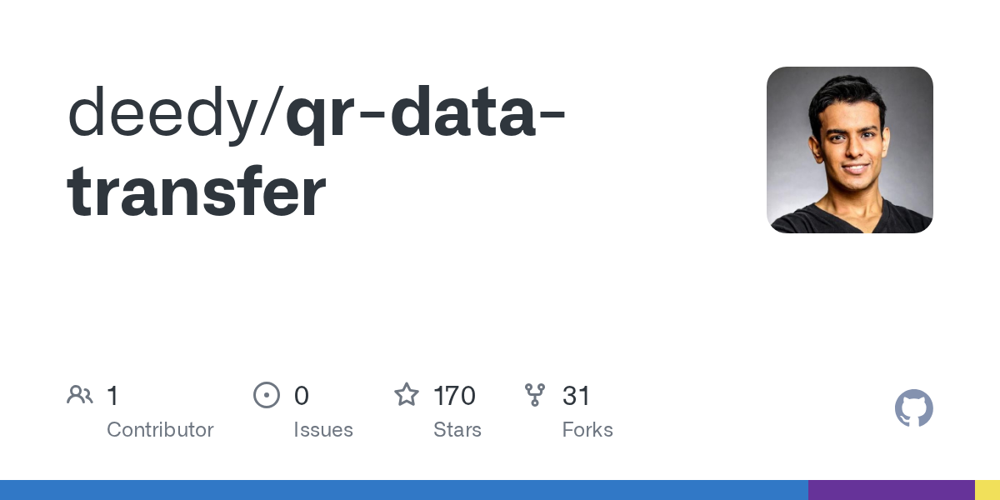
QRFerry: air gapped file transfer over animated QR codes
A vibecoded tool that moves files from a computer to a phone using only the screen and camera, no network, Bluetooth, or USB. Everything runs in the browser: Brotli compression, RaptorQ fountain coding, and CRC checks push a live QR stream at up to 50 Kbps, with a dual lane lab profile aiming at 1 Mbps. Shared on r/vibecoding, source at github.com/deedy/qr-data-transfer.
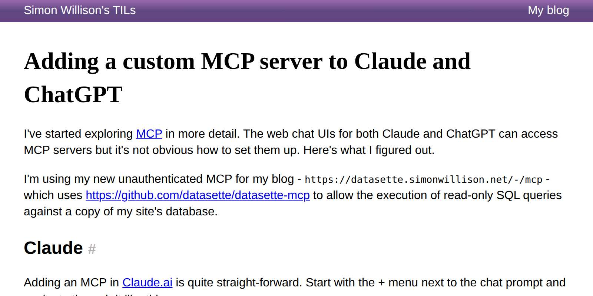
Adding a custom MCP server to Claude and ChatGPT
Simon Willison walks through wiring his unauthenticated Datasette MCP (read-only SQL against his blog's database) into both chat UIs. Claude takes a few clicks: + menu, Connectors, Add custom connector, paste the URL. ChatGPT needs Developer mode enabled under Security, then the MCP is added as a "Plugin" from a hidden + button, activated per chat, and confirmed through two consent screens. MCPs are not available in Advanced Voice mode.
The Complete Shelf: a browsable 3D bookshelf
Nineteen procedural hardcovers sit on one continuous shelf, and any volume pulls forward so you can orbit it, zoom in, and read its editorial details. The demo catalog is Stripe Press titles, and the source is open at github.com/mintdotgg/bookshelf, meant to be forked and refilled with your own books. It runs without Mint, which ships in the repo as an optional MCP connection plus vendored Three.js skills.
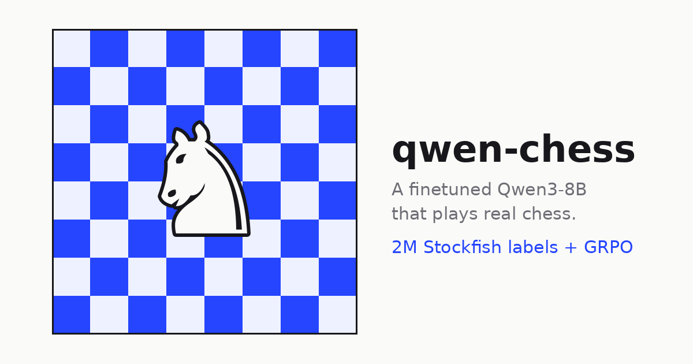
qwen-chess: an LLM that plays real chess
Amjad Masad's chess engine, playable in the browser. One small finetuned LLM (Qwen3-8B with LoRA) produces every move itself with no engine assistance: SFT on 2M Stockfish-labeled positions, then a short GRPO RL pass, around 1200 Elo so far with a 2000+ goal. The site ships a full walkthrough with annotated code for every experiment, announced in his thread on X.
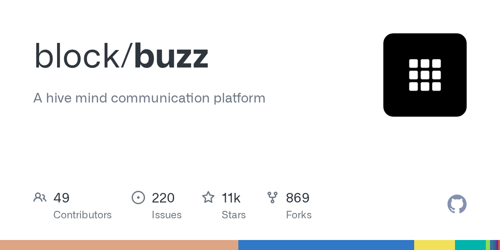
block/buzz
Jack Dorsey's team at Block open sourced Buzz, a self hostable workspace where people and agents share the same channels, meant to replace Slack plus GitHub. It runs on a Nostr relay, so messages, git patches, CI results, workflow runs, and review approvals are all signed events in one searchable log. Rust relay, Tauri desktop app, and buzz-cli with an ACP harness for Goose, Codex, and Claude Code.
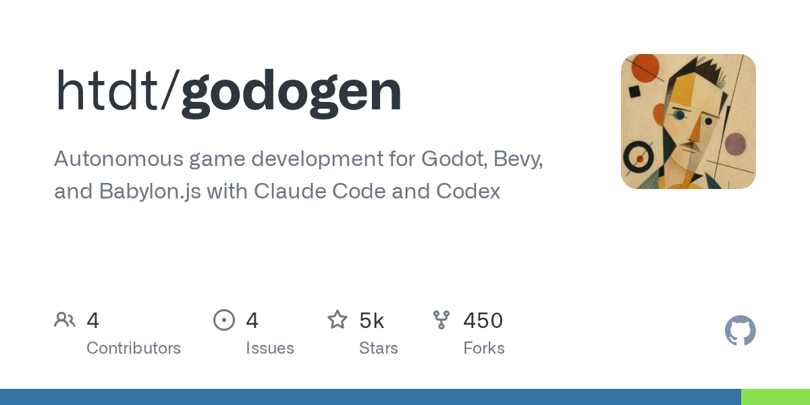
htdt/godogen
Autonomous game development for Godot, Bevy, and Babylon.js with Claude Code or Codex. You publish a thin game repo, then the agent writes the code, generates assets with Gemini, Grok, and Tripo3D, runs the engine, and judges the result from the running game instead of a clean compile.
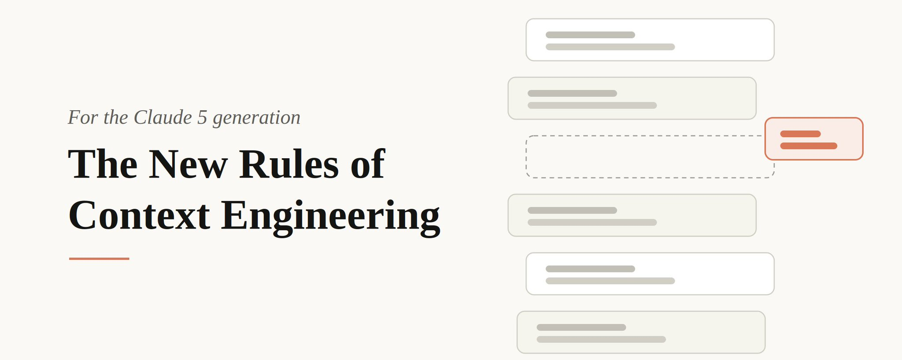
The new rules of context engineering for Claude 5 models
Anthropic removed over 80% of the Claude Code system prompt for Opus 5 and Fable 5 with no measurable loss on their coding evals. The point is that system prompts, skills, and CLAUDE.md files over-constrain the newer models and often contradict each other. Run /doctor to rightsize yours.
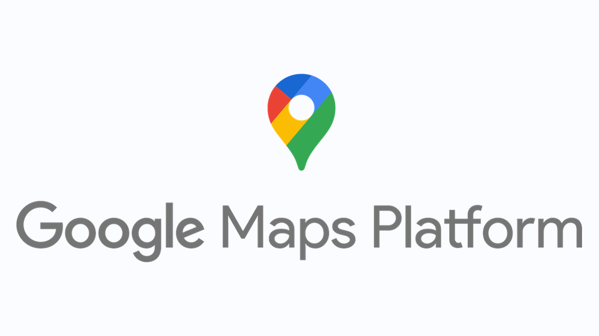
Isochrones API: true reachability calculations
Calculates the area you can reach from an origin point within a set amount of time. Unlike a radius, it accounts for actual road network travel times.

oso95/scroll-world
An agent skill for Claude Code and Codex that turns any brand into a scroll-scrubbed 3D world landing page: one continuous camera flight through generated isometric scenes, Apple product-page style.

bharatlas: India's open atlas
The wiki for India's maps: 94 open geo layers from state boundaries to 584k village polygons, city wards, constituencies, and rivers. View, slice, and download as Parquet, GeoJSON, or KML. No signup, no tracking, MCP access for LLMs.

MadsLorentzen/ai-job-search
AI job application framework built on Claude Code: fork it, fill in your profile, and it evaluates postings, tailors CVs and cover letters in LaTeX, and preps interviews. 25k stars; the author used it to land a job.

NYC Simulator
Procedurally generated 3D Manhattan in Three.js from real city data: 86k street segments, 305k building footprints, ~10k census-based synthetic residents, and an LLM concierge that reasons over the whole simulation.

kepano/kepano-obsidian
The Obsidian CEO's personal vault template, open sourced. A bottom-up approach to note-taking; clone it and point Claude Code at it as a second brain starting point.

Attempting to Become an "Expert" With AI: Part 1
A two-week experiment testing whether AI can close a competence gap: a Claude-built 14-day curriculum with retrieval practice, skeptic roleplay, and a capstone. Full prompts included.

Transitions.dev: Essential transitions for web apps
Collection of the most essential UI transitions for web apps. Copy as CSS or React, or install as a skill for Claude, Cursor, or Codex.